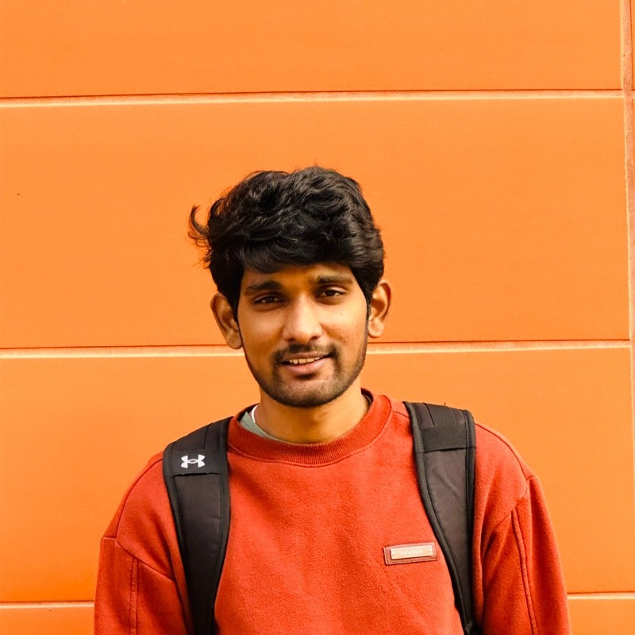

I build AI systems with measurable performance, auditable decisions, and reproducible evaluation. At Telaeris in San Diego, I build production LLM agents, retrieval pipelines, evaluation infrastructure, and model-serving workflows. I am also the Founder of Numin / Quant Decision Labs, an independent research program studying market reasoning and decision-making under uncertainty.
My research spans LLM evaluation, positional encoding for code-mixed language, and vision-language models for time series. Work is accepted at EMNLP 2026 Main Conference, with prior work in CALCS 2023, HICSS 2026, and the AAAI 2022 Student Abstract and Poster Program. I hold an M.S. in Computational Data Science from San Diego State University (2024) and a B.Tech in Computer Science and Engineering from IIIT Sri City (2022).
The thread connecting all of it: systems where an LLM's judgment is checked by deterministic rules and honest evaluation. I think that's how trustworthy AI actually gets built.
I founded Numin / Quant Decision Labs to build market-reasoning systems that make their evidence and evaluation inspectable. The platform produces versioned theses through multi-agent debate, backed by a deterministic Python control layer enforcing risk floors, confidence and coherence checks, and a latching daily-loss halt.
Current engineering: acquired and audited 2,880 hourly Parquet files (34.021 GB) of September 2026 BTCUSDT and ETHUSDT futures L2 depth and trades. The audit covers 6.967 billion depth rows and 242.225 million trade-table rows, with explicit quality exclusions for gaps, resets, clock issues, and invalid execution values.
Implemented snapshot-anchored replay across hourly file boundaries, with replay validation ongoing. Live research recorders capture NQ/ES through Rithmic and BTC/ETH L2 data through Coinbase, preserving exchange and receipt clocks, gap/reset checks, bounded capture, and backup jobs.
Research status: this tick-data pilot is acquisition, audit, and replay engineering. No prediction model has been trained or scored on it. Past-only inputs, future outcomes, and a frozen daily-adaptation versus static-baseline comparison are planned next.
Completed NQ research: pre-registered tests reported negative directional results: four direction tests failed to beat the reference forecast, and none of 34 order-flow cells showed lift. Positive skill was limited to volatility expansion and level contact under calibrated walk-forward evaluation. The tick-data pilot has not established a predictive edge or profitability.
Accepted, Main Conference. A two-pass evaluation framework for diagnosing compositional reasoning failures when task structure is implicit.
Minimal-supervision fine-tuning of VLMs with graphical and numerical time-series representations.
Published in the 6th Workshop on Computational Approaches to Linguistic Code-Switching. Evaluates switching-point-aware positional encoding for sentiment analysis and machine translation.
Student Abstract and Poster Program. Initial observations on switching-point-based positional encoding for code-mixed text.
San Diego State University research report CSRCR2024-02. Numerical simulation of marine-algae whorl formation using mimetic operators.
Submitted to ICLR 2027. In OLMoE-1B-7B, full-router continual adaptation increased expert-identity drift 1.7× while structured expert substitutions stayed stable to ±0.002 across 3 seeds under controlled nulls.
Submitted to ICLR 2027. Across 600 discovery episodes from 3 datasets, naive held-out selection produced 98% non-transferable empirical laws. ScaleTrust uses a frozen trust/abstain protocol calibrated on planted ground truth.
Multi-agent market reasoning, deterministic controls, and an audited 34 GB L2 depth-and-trades pilot. Snapshot-anchored replay and quality-aware research pipelines; detailed status above.
Hybrid retrieval with query understanding and metadata enrichment raised Hit@10 from 0.74 to 0.83 in A/B tests, supported by guardrails, evaluation datasets, and LangSmith tracing.
Computer-vision models for lending workflows using U-Net and YOLOv3, optimized with ONNX to reduce inference latency from 13 seconds to 4 seconds.
Large-scale Twitter analysis of sentiment shifts across war events using transformer models and temporal topic modeling.
Misinformation detection on social media with NLP feature engineering and named-entity extraction.
Generative music pipeline trained at scale with distributed preprocessing on Spark and GCP training infrastructure.
Open to Applied AI, ML engineering, and AI×Quant roles, and always happy to talk agents, evals, and markets.
mohammedmohsin5431@gmail.com linkedin github